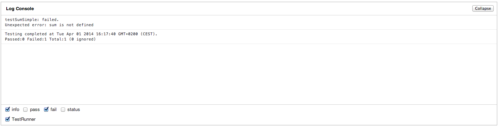
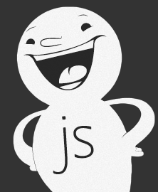

Before start Start day 1 [1.1] [1.2] [1.3] [1.4] [1.5] Start day 2 [2.1] [2.2] [2.3] [2.4] [2.5] [2.6]
var testCase1 = new Y.Test.Case( {
name: 'Sum Test',
testSumSimple: function () {
Y.Assert.areSame(
sum(2, 2),
4,
'2 + 2 does not equal 4?');
}});
In a complete example we need some extra setup to make the results show up in a webpage. The complete example for this lesson is shown here. The real test starts with Y.Assert which in this case wants to see that to parts are the same (sum(2,2) equals 4). As a wrapper of the things that are reported there is a Test.Case which is the level of reporting and more as one tests can be combined into one testcase.
Without having the code implement this testcase should fail. That is the practice of TDD:
The first two steps and last step are the most important steps in TDD. Do you understand why it is so important that a test first fails?
Tests will be run in this page: testLogConsole.html The image beneath shows the failing test
Beneath is the very oversimplified version of a solution to make the test above succeed.
function sum(a, b) {
return a + b;
}
After re-running the test this test should pass.  In this very simple example the refactor step out of the cycle of write test, fail, write code, fail, succceed, improve/refactor. In total this example has the following files needed for the main setup. To make this work within a course setting there are some extra files includede for the style of code (by syntaxhighlighter)
In this very simple example the refactor step out of the cycle of write test, fail, write code, fail, succceed, improve/refactor. In total this example has the following files needed for the main setup. To make this work within a course setting there are some extra files includede for the style of code (by syntaxhighlighter)
This first example consists of the following files:
Excercises:
var count = 10000, i, element;
Y.Profiler.start('createElement');
for (i = 0; i < count; i++) {
element = document.createElement('div');
}
Y.Profiler.stop('createElement');
alert('created ' + count + ' in ' + Y.Profiler.getAverage('createElement') + 'ms');
For a lot of organisations this type of tests are difficult. It is closest to the outcome and can realy proof that the whole chain of making code work correctly. The single most used tools in this context was Selenium. See for example page 138 in the OReilly book: testable_javascript for more detail on how to use Selenium
The main disadvantages of running Selinum was that it needed browser instances and runs realy in the browser making it rather slow. But currently there seems to be new ways of running test headless due to a combination of the tools: phantom and casper.

PhantomJS is a headless WebKit scriptable with a JavaScript API. It has fast and native support for various web standards: DOM handling, CSS selector, JSON, Canvas, and SVG.
Next to webpage testing it can be used to do screen capture (see also the excercise). As even the screen format can be set. This can also be used to make an automated visual output of many different form factors to be able to do a quick visual check.
var page = require('webpage').create();
page.open( 'http://tweakers.net/', function () {
page.render('tweakers.png');
phantom.exit();
});

Casper is ....todo And then nog casper see testable javsascript, zie page 166 of testable javacsript (todo aanpassen aan een bestande mini app die we direct in elkaar moeten zetten voor testdoeleinden)
var casper = require('casper').create();
casper.start('http://search.yahoo.com/', function() {
this.fill('form#sf', { "p": 'JavaScript' }, false);
this.click('#yschbt');
});
casper.then(function() {
this.test.assertExists('#resultCount', 'Got result count');
});
casper.run(function() {
this.exit();
});

In the previous example we wrote tests. But these tests are meant to test of something is done accoording to the specs. Wouldn't it be nice if we could uses the specs instead of making extra tests. This has more advantages. Of course there is also some translation needed going from specs to tests. Another advantage is that it help getting specs more specific and concrete by adding examples, adhering to a proven format and implements that when a requirement cannot be tested we could hardly name it a spec. Another pro is that a lot of test/spec are readable by end users. Making these testspecs is a more solid way that the result was conform what was described during design and is continuously used while making the solution.
Beneath is the very trivial/ canonical example of hello world for jasmine. It does of course not show the potential but is helpfull in explaning the basis structure. The describe function describes the component are functional grouping of test (and hopefully aligned code). The "it" function describes the specification, in this trivials it is an action: "says hello". The expect function determines how we can prove ourselfs that the spec is fullfilled.
describe("Hello world", function() {
it("says hello", function() {
expect(helloWorld()).toEqual("Hello world!");
});
});